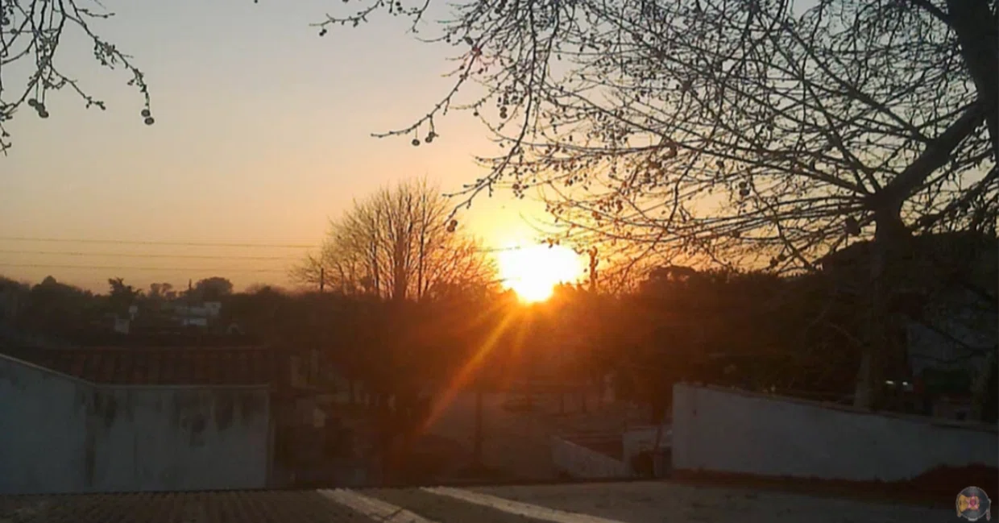

Old Dawn
Let me tell you about that old dawn, where the cicadas cried sorrowfully until their voices spilled over my musical score.
Quoting from my 2013 journal: After my girlfriend at the time told me she was five months pregnant by another guy, I decided to move back to my parents' house. My parents were away on vacation, so I was all alone. Almost nothing remained of what that house used to be. Since my parents had moved upstairs a little while before, the ground floor had turned into an abandoned place, belonging to no one.
What remained there were the broken fragments of my childhood. The dogs were gone, and the uninhabited ground floor was wrapped in rubble and chaos, on the verge of total collapse. It was the reality that even while a person tries hard to ignore it, time relentlessly and cruelly keeps moving forward. And then, in a sudden instant, your eyes are forced open.
Back then, the pain of losing the relationship I had so deeply longed for—with the woman who was supposed to become the mother of my child—plunged me into six months of heavy drinking. Around the same time, I attempted a fleeting fling with a young woman, but because of her hysterics, we didn't even kiss.
One morning, I woke up early as usual. During those 15 days of leave, I always woke up in the early hours of the morning. In solitude and silence, with no plans and no ambitions. I often mixed drinks, squeezing oranges into vodka.
I remember I only had 150 pesos (about $28) to survive those two weeks, but I decided to spend 100 pesos of it on alcohol.
In the morning, when I woke up, I went outside. I sat on the terrace and watched the sun, which was just beginning to rise behind the adjacent trees, barely trying to cast its light. That morning, the sound of the cicadas echoed intensely. It was a wonderful chorus, awakening all kinds of memories from the past.
It had been a long time since I last listened to the cicadas. In that moment, I realized the simplicity of beautiful things and the presence of nature that humans constantly ignore. People stop listening to the birds, stop hearing the sound of water running through the storm drains, and eventually, stop listening even to their own voices.
I attempted to engrave that feeling—where childhood, nostalgia, and the present moment intertwine—along with a meaningless 'touch-and-go' relationship into a new song. That song was 'Viejo Amanecer'.
It was a story meant as an excuse to 'forget' what was happening to me. Yet, somehow, it ended up being about a broken six-year relationship.
Lyrics
The same cicadas from that old dawn
Wander through the night, crying out
Yellowed, faded photos and letters still tell
The story of who I used to be
Clock hands turning in reverse
Wither the way I know how to love
Dazed, you stumble indifferently through my days
No longer even knowing where to look
Approaching on tiptoe, then stepping back
Dancing in hesitation
Your hand in my hand, your mouth on my mouth
Let us escape together into this… illusion
Even if everything we shared was beautiful
And every perfect moment with you by my side
Life is flowing in another direction now
Heading toward… where my dreams await
Eyes the color of chamomile irritate my eyes
Your extreme innocence plays a bluff
The color of that wild, rebellious voice
Intoxicates my very essence
Angel hair floating in a soup of caresses
Reiki to heal my pain
Fusing souls, releasing the mind
That… is what making love is
Even if everything we shared was beautiful
And every perfect moment with you by my side
Life is flowing in another direction now
Heading toward… where my dreams await
The same cicadas from that old dawn
Wander through the night, crying out…

The same cicadas from that old dawn
Here in Argentina, cicadas sing continuously throughout the summer—day, morning, and all through the night. This month, I haven't heard their voices anymore.
The phrase 'the same cicadas from that old dawn' symbolizes a certain passage of time. It means that the same cicadas that sang 15 years ago, when I first came to that house as a child, are still singing today. Their song felt identical to back then, almost as if they were the exact same creatures. The tree blocking the sun was also unchanged. Everything was precisely the same, yet at the same time, it wasn't. This line evokes a distinct melancholy. Inviting the listener or reader back into their own childhood and past was my intention, and it was the very first part I wrote for this song.
The line about the 'yellowed letters' references letters from a past relationship, drawn directly from my own experience. I used to keep every letter from my ex-girlfriend. When we first started dating, we exchanged dozens of long letters every month on our anniversaries, but over the years, that devolved into an annual routine. The letters simply detailed ourselves, compliments to one another, and sweet words. In a way, they were like photographs capturing what we had accomplished and how we had acted that month, like the work of sketching a character.
However, stashed away in a box, those letters aged with time. Now, the paper has yellowed, telling the story of who I once was to someone else.
Clock hands turning in reverse
This part still feels like a representation of my present. The 'clock hands' do not refer to a physical clock, but rather to my own mindset—constantly returning to the past, preventing forward movement, and planting distrust. It creates something within me that makes building new relationships impossible, or at least excruciatingly difficult.
Back then, I met a 17-year-old girl and started going out with her. Yet at the same time, I kept thinking back to when I first met my ex-girlfriend. Both shared a common pattern I knew all too well: neither knew what they wanted or where they were going as they tried to resolve their lives. And I acted like a superhero flying to the rescue, attempting to save them from their emotional dissatisfaction.
Approaching on tiptoe, then stepping back
The first part describes how emotionally unstable (hysterical) this young woman was, detailing clearly how lost she was regarding her own desires. In fact, at one point I pointed this out to her, and she admitted it herself.
The other part of the text was simply my imagination flowing onto the page—a desire to taste former sensations once again, to escape the past and immerse myself in a magical moment of illusion. Naturally, it wasn't love. But as a matter of personal reality, none of that actually happened. The reality was that after two outings and numerous phone calls, she promised to get in touch after returning from her vacation, and I never heard from her again.
In contrast to the dawn, here is a photo of the sunset from back then.
Even if everything we shared was beautiful
I wanted my writing to carry a poetic ring, but I also knew it needed to be something anyone could understand (since very few people reflect deeply on what this or that truly means). That's why I decided to include a memorable chorus.
To be honest, the chorus was the last part I composed. Because the entire song had turned out so deeply depressing, I wanted something that offered a sense of hope—that life doesn't end there—even while delivering that melancholic weight. Otherwise, it would be like saying 'life is shit and there is no salvation,' which is the message furthest from what I want to convey through my music.
So, drawing from what was actually happening with my ex, I poured everything into it. What I really wanted to convey with those words was: 'Those six years were wonderful and without regret. But there is no going back. The reason I live today is solely for my dreams...'
It is crucial to understand that after getting sober, these events forced me to ask many existential questions, leading me to explore 'who I am' and cast aside negative mindsets like discrimination. Ultimately, I made the decision to bet on my dreams.
The scene presented here has a dual backdrop: on one hand, you see a man utterly crushed and hopeless; on the other, you see him fighting to realize his dreams—the only light he managed to reclaim.
Yet despite these intentions, people focus primarily on the melancholy and heartbreak. In fact, when I played this song for my sister a few months ago, she said, 'Play that sad song.' Joined by my brother-in-law, they refer to it as 'the sad song.' But I have no complaints. In the end, everyone likes it, and the reality is that each person interprets the world in their own way.
Eyes the color of chamomile irritate my eyes
Though less technical, this was another section where I wanted to weave in poetic expression. 'Eyes the color of chamomile (matricaria)' simply refers to light brown eyes. Years ago at the beach, I remembered my mother saying 'chamomile lightens hair,' which my brother tried out. Because of that, I pictured light chestnut hair—a hair color shared by both my ex-girlfriend and the girl I had just met.
'Playing a bluff with innocence' means they were not innocent in the slightest. 'Bluff' is poker slang for lying. Both women acted innocent, but it was obvious they weren't. If I ever met someone who was truly innocent and genuine, I'm sure I'd be amazed.
I described her voice as 'wild and rebellious' because the girl I was seeing at the time used to skip English classes or try to sneak around behind her father's back to meet up—that kind of behavior, always trying to avoid her parents. Also, after using the word 'traviesa' (wild / mischievous), I realized people might confuse it with a sexual term, namely transsexual. I thought that would spark debate and provoke thought, which was perfect (even though I am strictly heterosexual).
'Intoxicates my essence' is actually a metaphorical expression. My essence itself doesn't change, but the way a captivating woman behaves makes you feel different, makes you a different presence, and makes reality look different. It's like falling into an atmosphere of romance. Rationally speaking, it's quite absurd, because one should always love and always exist within that happy state. At any rate, considering we were both drinking, it was an expression of my behavior at the time, which is why the word 'intoxicate' came to mind.
Angel hair floating in a soup of caresses
'Angel hair' (cabellos de ángel) refers to fine, straight hair. It is also the name of thin pasta used in soups, originating from when I was with my ex and used to nibble on her hair as if it were noodles.
'A soup of caresses' describes the protagonist stroking her hair—a scene pictured in the mind, lying in bed after making love.
The expression 'a Reiki healer for my pain' is easy to understand. Reiki is an Eastern alternative therapy that uses energy from the palms to heal. In this context, I wanted to convey that being with that girl was an obvious illusion—a simple exchange of selfish affection and physical touch. That's why caresses heal the wounds. In truth, it's nothing more than attempting to heal emotional scars through empty carnality.
I pondered the question 'Is this how love is made?' for nearly a whole month. I brought up the topic in numerous conversations and went around asking coworkers, 'What is the difference between sex and making love?' My colleagues all shared hundreds of differing theories.
Exhausted from not finding an answer one afternoon, I wrote down whatever came to mind, wanting it to carry a ring of wisdom. And I concluded: 'Love is made when two become one.'
To reach that point, souls must fuse and unite. And to become one, like astral travel, all human associations and thoughts must be eliminated—because while making love, a person forgets everything. At least, that's how I wanted to explain it. This remains a vast concept still under development, and I don't intend to debate or analyze it for a while. I simply presented my thoughts at the time I wrote the song, believing many people would relate.
The song ends once again with the fading sound of 'the cicadas from that old dawn.' This signifies that no matter how much the protagonist struggles, he can never escape the past—because running away is not the solution. That was also my reality back then. It was all happening inside my head; even after meeting that woman, another morning would simply begin with me sitting on the terrace, listening to the same cicadas, and slipping back into old memories.
I plan to add the sound of cicadas to the intro and ending of this track. I had recorded them previously, but the audio was lost when I formatted my PC. So unless I wait until next summer, I'll need to record them again or download a sample.
Notably, I finished recording this track two years later, using new cicada sounds I recorded myself on the terrace the following summer. Looking back now from a distance, blaming alcohol—even for a short period—and clinging to vanity seem foolish. Yet, I cannot hate that wounded man I used to be. Things were far too unfair, and one shouldn't apply too strict a yardstick to a poor sheep that lost its way and didn't know how to return to the flock.
Even now, I hear the cicadas every summer. But their sound no longer reaches me as sorrow or melancholy; it arrives as a happy rhythm. I no longer look back on those days of false illusions I once needed.
That old dawn remains unchanged. The one who changed was me.